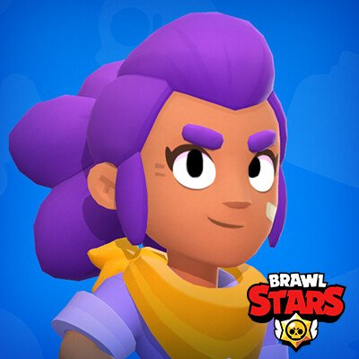

Шелли
Шелли (англ. Shelly) — единственный начальный боец класса «Урон». Этот боец автоматически есть у каждого игрока в самом начале игры.
Шелли (англ. Shelly) — единственный начальный боец класса «Урон». Этот боец автоматически есть у каждого игрока в самом начале игры.